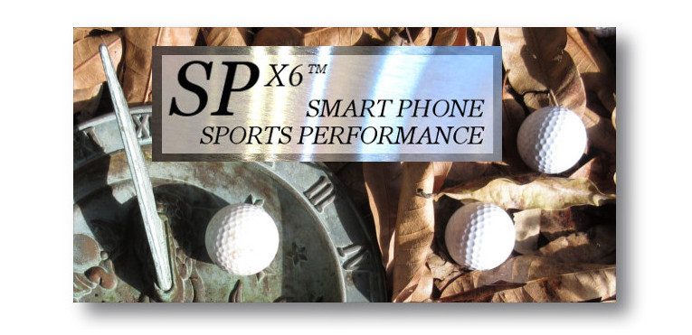
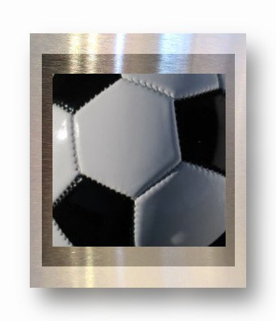
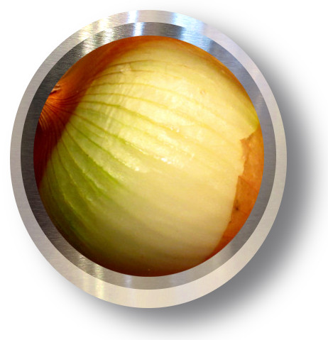
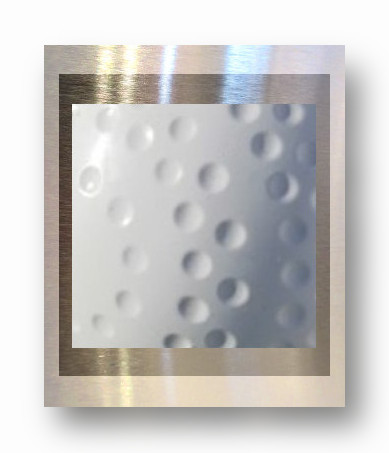
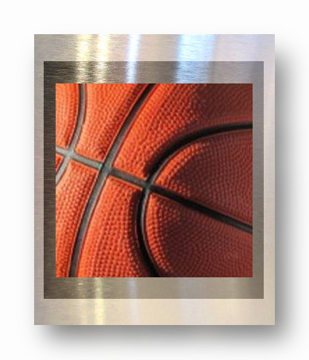
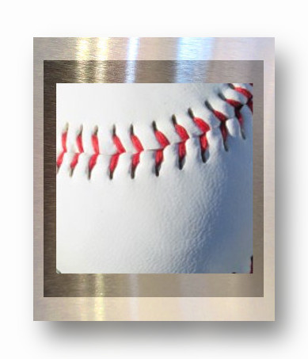
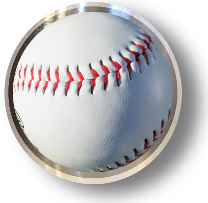
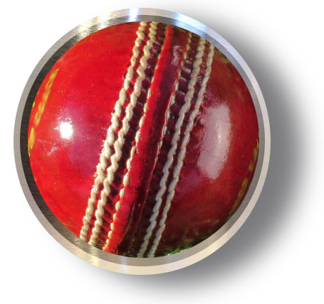
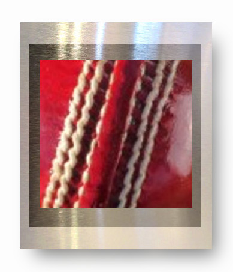
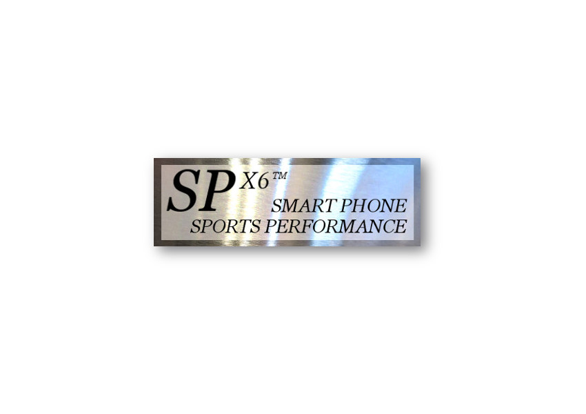

DARE TO PERFORM
Hi There. This is the web page for a hypothetical product that has not yet been built. The page is designed to gauge your interest in owning it. If you get to the end of our pitch and think you want one, we want you to click the button. You will not be charged anything but you might want to register your interest by sending us your email address. Because if you decide that you do want one, and it eventually does get built, then you might want to be one of the first to own one.
Some days you wake up feeling like a "square peg in a round hole" as they say in English. Deterioration in your performance can occur because of a combination of factors:
The SPx6 will offer a wide range of testing and broadcast options to address most of these factors but your dietary choices are your own to ponder. You might like to read our diet advice section to put you on the right track to better performance.
So what is the product? Put as simply as possible, it is a small gizmo that you carry in your pocket or underwear that broadcasts signals from your smart phone into your body that will improve your health, particularly in relation to your performance at sports, if that is how you want to use it. If you don't play sport you can use it to boost your immune system, balance your hormones, improve your digestion, or pick up your energy.
Based on many decades of research by doctors and scientists in mainly Germany and Russia, the gizmo will be able to assess the way your body works using biological resonance recording. Our bodies make a little bit of electrical energy, and it surrounds us in a complex pattern called a "field". A healthy body makes a bigger and stronger field than a sick body. The gizmo will record that pattern and send it to our website for processing. The processing will identify bioresonance signals that should make your body run better. A group of signals will be sent back to your smart phone to be broadcast to your gizmo for a few hours each day or once a week or whenever you might want to use it.
The gizmo has been designed by a retired holistic medical doctor, who spent thirty years in practice, most of them in the practice of biological resonance medicine. You have heard of an MRI scanner, Magnetic Resonance Imaging, a scanner that uses extreme high power biological resonance. The system we are talking about operates at a tiny tiny fraction of that energy, and without the noise!
 Is there any research available to read, are there any testimonials yet? Well no, it has not been built yet. However there are over 20,000 doctors and allied health practitioners using expensive forms of this gear in Germany alone. Machines that cost over 10,000 dollars each. They are using this bioresonance technology because they know it works for their patients and clients - those numbers speak volumes. Head on down and click that button if you are interested. Otherwise move on and enjoy your day!
  REGISTER ME - I think I want one! 